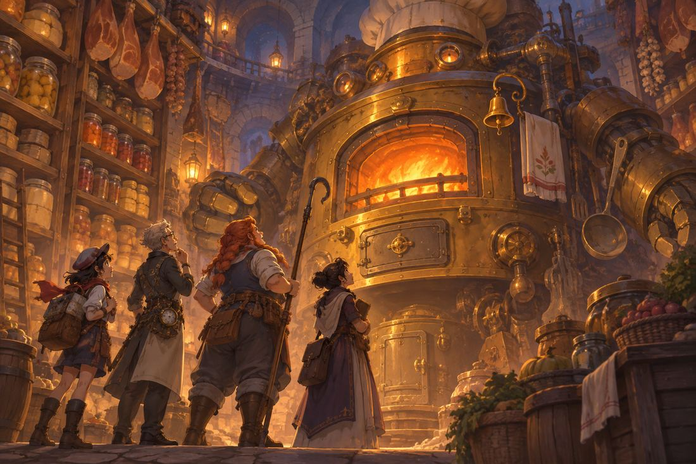

Chapter 11 plot and boss
A village stuck at supper for thirty years, Bett's sister and a family pudding, the Great Larder in the cellar, and the optional Whistling Kettle hunt.

On this page
Warning This page gives away the plot and the boss of this chapter.
For the places, shops, chests and Rust, see Larkhill.
What happens
East of the Hour Clock the road goes on. Last week it stopped there; tonight a lamp is lit at the far end, then a whole string of them. Wren shows a poster that turned up at Wicklow Halt with no stamp: "Hesper Quill's Everlasting Sunday Fair. Your best day, kept." It carries a postmark from a place Corwin insists does not exist. Bett sees a line of glowing people walking east. Ottoline has measured that the Rust is thickest where time is kept, not only where it is stopped. The moth will not come back from the edge of the lamplight.
The lamps lead into Larkhill, where one table runs the length of the village and every seat is full. The sun has not moved. Reeve Quince welcomes you to Harvest Home. A tall woman with silver hair and a coat with a hundred buttons came through with the lamps and asked why a best day should ever end; the village voted 412 to nothing. The rule is that nobody leaves until the pudding is served and the bell is rung. The pudding bell went down the barn's cellar hatch thirty years ago, so they have seconds, and thirds. Corwin hears dumbwaiters under the table: something feeds it from below. Quince will give you the barn key once you have said hello to Jenny Marsh.
Jenny is Bett's sister, who has kept Bett's chair at the Marsh end since she sat down. Half of Saltmarsh followed the lamps. It is not unpleasant, she says, which is the worst of it, but she cannot seem to get up. She replied to Bett's letter and kept the reply in her basket because she did not know where to send it: "Save me a pudding... I read yours nine times. It was the better letter." She teaches Bett Nan Marsh's duff.
Quince gives you the key. In the barn, Old Tam Thatch says the Larder woke up one night and took the bell and his hook. Below, every jar in the cellar is labelled "Seconds" and the whole place is one clockwork machine, kept by ladles, pie tins and pepper mills. You find the Larder Key and open the iron door.
In a chamber as big as the barn stands an oven with a fire in its belly, a pantry around it, and a little brass bell on a hook. Corwin says it is not a monster but "a very good cook that nobody ever told to stop". Wren tells it you only want the bell and for everyone to go home. When it falls, the fire sinks to embers, the door closes softly like a book, and the bell drops into Wren's hands.
Back on the green, the bell is the size of a teapot, its handle worn smooth by thirty harvests. Ottoline points out the table will no longer refill. Quince panics, then admits he has forgotten what comes after supper. Bett says she can do pudding, and the village makes Marsh Duff together using every fire on the green, passing the sugar the whole length of the table. When Bett lifts the dish to carry it up the table, as she always does, Jenny tells her to sit and let somebody carry it for her, just the once. The dish goes up the green on five pairs of hands while Bett cries and grins at once.
Quince rings the bell, a small, bright, ordinary sound, and for the first time in thirty years the sun moves and goes down behind the hill. Every lamp lights itself. Hobb tells Ida he is coming up the table, Toby is amazed it is night, and Fiddler Sorrel plays a tune that finally has a last note. As thanks, Quince gives you the Silver Spoon, three Marsh Duff, two Plum Cordial and 1,500 Marks.
On the post by the gate, under the Fair's poster, a smaller one is pinned: "Next stop: Brindle Quay. Regatta Day." Wren pockets it, and Bett says to find the next stop and bring a spoon.
Party and moth
- Nobody joins or leaves, and the moth gains no new Light.
- You learn cooking from Mrs Crumb, and the recipes Marsh Duff, Peppered Pasty and Honey Cake from the errands. See Cooking.
- Bett's Bonds with Wren, Corwin and Ottoline rise at the Marsh table and again at the pudding. See Bett.
Boss: The Great Larder
A pantry the size of a barn with an oven for a heart, built to keep the supper coming. It is not greedy; it has only never been told that anyone is full.
| HP | 33,500 |
| Attack | 201 |
| Defence | 41 |
| Mind | 193 |
| Speed | 21 |
| XP / Marks | 7,800 / 3,300 |
| Weak to | Tide and Frost |
| Resists | Gear |
| Drops | Wind Draught (always) |
These are base figures. The game tunes bosses higher, so expect a stiff fight. Train a few extra fights first; the Rust returns after a rest.
| Move | What it does |
|---|---|
| Rolling Pin | An ordinary hit on one hero. Its most common move |
| Gravy Boat | A magic hit on everyone; about 60 percent chance to Slow for 2 turns |
| Slam the Larder Door | A weak magic hit on everyone; about a third chance to Seize for 1 turn |
| Overdone | A magic hit on one hero; about 70 percent chance of Rusting for 3 turns |
| Second Helping | It hurries itself. No damage |
| Everything Out of the Oven | BIG. A heavy blow on the whole party |
| The Last Course | BIG. Its hardest single-target hit, twice per cycle |
The moth's Glow shows both BIG moves a turn early. The pattern is a fixed 14-move cycle: Rolling Pin, Slam, Overdone, Rolling Pin, Second Helping, Everything Out of the Oven, Gravy Boat, Rolling Pin, The Last Course, Slam, Rolling Pin, Overdone, Everything Out of the Oven, The Last Course, then it repeats.
Advice. Ottoline's Rime and Bett's Undertow (which can also Slow it) hit the weaknesses. Ice Floe (Bett and Ottoline) and Cold Post (Wren and Ottoline, which also leaves it Exposed) are strong Chains if your Bonds are high enough. Do not rely on Gear: it resists it. Cook first: Honey Cake raises damage and Marsh Duff raises Defence and heals everyone. Pepper Soup clears Rusting and Seizing. Use Bulwark before Everything Out of the Oven and Drop Anchor to pull The Last Course onto Bett. Rest at the cellar's save clock before you open the iron door. See Battle basics.
Hunt: The Whistling Kettle
An optional, much harder fight on the Rolling Downs. A copper kettle as big as a cart has been coming to the boil for thirty years, and its whistle stops you in your tracks. It starts at the notice board in the Gleaner's Rest and follows clues from villagers to the orchard. See Hunts.
| HP | 32,000 |
| Attack | 305 |
| Defence | 40 |
| Mind | 290 |
| Speed | 25 |
| XP / Marks | 3,000 / 900 (plus 400 Marks after the fight) |
| Weak to | Frost and Tide |
| Resists | Gear |
| Drops | Lake Tonic (always); the Kettle Whistle trinket as a reward |
It has the highest Attack and Speed of any fight so far and acts far more often than your heroes. Its moves are Steam Jab, Scald (Slows the party), Whistle (may Seize), Cold Spout (likely Rusting), Come to the Boil (it hurries itself), and the BIG moves Boil Over (whole party) and Pressure Release (hardest single-target hit, twice per cycle). Use Frost and Tide, Wren's Hurry, a Peppered Pasty for speed, and cure Rusting and Seizing quickly. It does not chase you, so you can leave and return after a few levels and a good meal.
What the chapter leaves you with
- The Silver Spoon, 1,500 Marks, three Marsh Duff and two Plum Cordial.
- A restored village that finally has a morning.
- The poster pointing to the next stop.
Previous: Chapter 10 plot and boss. Next: Chapter 12 plot and boss.